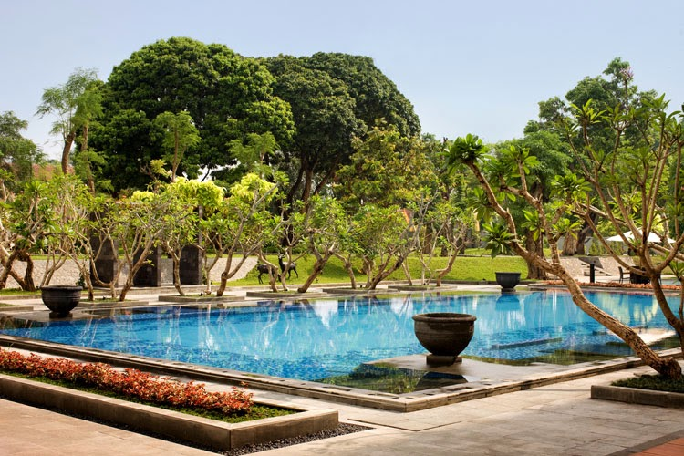
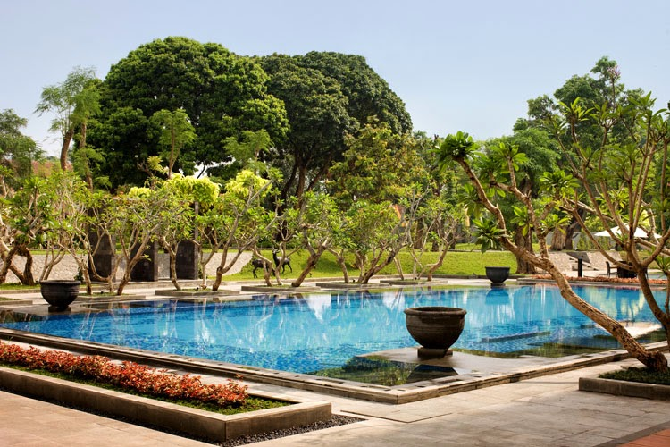

Royal Ambarrukmo Hotel adalah hotel bintang lima yang terletak di Yogyakarta, menawarkan pengalaman menginap yang mewah dan nyaman. Dengan desain arsitektur yang menggabungkan elemen tradisional dan modern, hotel ini memberikan suasana yang elegan dan hangat. Fasilitas yang ditawarkan termasuk kolam renang, spa, dan restoran dengan berbagai pilihan kuliner lokal dan internasional.
Salah satu daya tarik utama hotel ini adalah lokasinya yang strategis, dekat dengan berbagai objek wisata terkenal di Yogyakarta, seperti Candi Prambanan dan Keraton Yogyakarta. Royal Ambarrukmo Hotel juga dikenal dengan layanan pelanggan yang luar biasa, menjadikannya pilihan ideal bagi wisatawan yang mencari kenyamanan dan kemewahan selama berkunjung ke Yogyakarta.